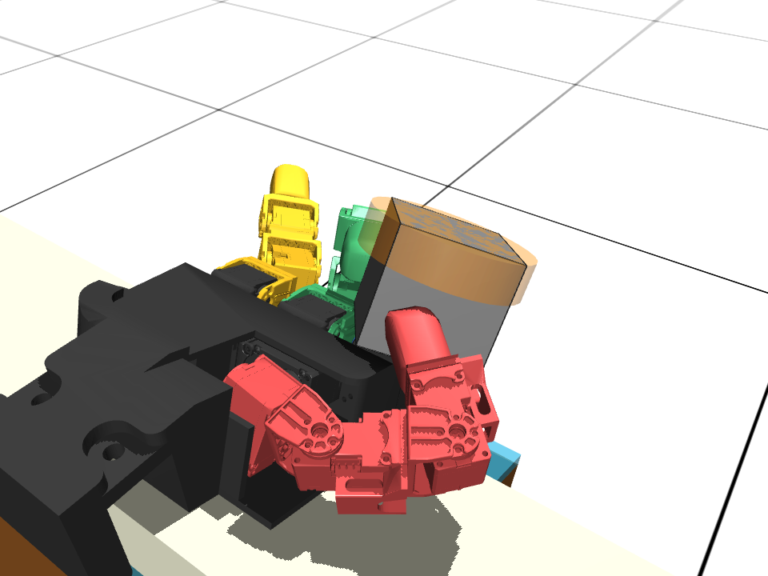

모델상30초 유지 확인. 엄지 앞면 아래, 검지·중지 뒷면 아래, 손바닥 받침. 약지는 필수가 아니다.
최대 위치 변화
0.957mm
최대 자세 변화
1.873°
앞뒤 접촉 비율
98.42%
30,000개1ms 검사에서 윗단 침범0. 증명된 최소 모델 여유 0.300140mm. 실물 오차 내성을 확인한 수치는 아니다.

새 SAC 학습·실물 구동은 없었다. 독립 초기화한 모델 파지가 안정된 상태에서 시작했으며, 실제 시작 자세에서의 진입 경로는 아직 없다. 중력 기준 약9.47° 기울어진 작업 자세여서 기존 수평5° 과제 실패는 보존했다.
실제 회전 끝에서 새 파지로 진입하기, 다음90° 회전 뒤 재파지, 연결 경로의 오차 검사와 실물 확인.
수정 경로는5° 목표에 실제4.906°까지 움직였다. 중심은4.591mm 이동했고, 그 도달 자세를 고정하는 검사에서도 윗단 공간과 앞뒤 손끝 접촉이 확보되지 않았다. 위 옛 분기의 실패는 보존하며, 새 경로의 회전 뒤20.025초 파지는 상단 최신 검사를 참고한다. 90° 연속 동작이나 실물 시험 준비 완료가 아니다.
| 모델 분기 | 실제 회전 | 판정 |
|---|---|---|
| next_turn-5p0_palmclear_margin8_fingerclear | -6.593° | 기존 기준 중단: self_mm |
| next_turn5p0 | 3.772° | 기존 기준 중단: self_mm |
| next_turn5p0_palmclear | 4.480° | 기존 기준 중단: range_rad |
| next_turn5p0_palmclear_margin8 | 4.205° | 기존 기준 중단: self_mm |
| next_turn5p0_palmclear_margin8_fingerclear | 4.841° | 기존 기준 중단: self_mm |
| next_turn5p0_palmclear_margin8_fingerclear_allpalms | 4.906° | 각도 근접, 위치 변화 4.591mm로 고정 위치 복귀·유지 진입 미달 |
원본170개 결합 해시와 기존 중단 기준 보존. 장치 접근0, 실물 실행파일 교체0, 원격 업로드0.